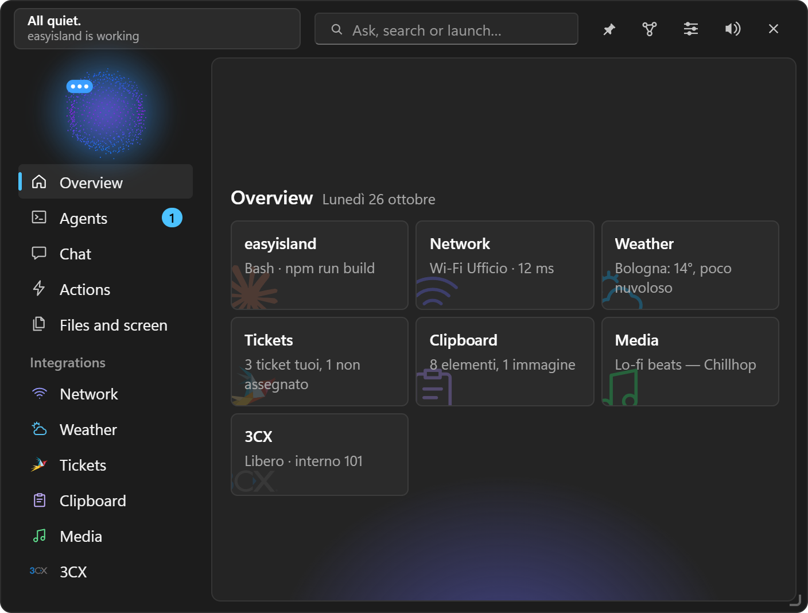

EasyIsland Guide
Everything EasyIsland can do, page by page: from installing it to the personal agent that works on its own.
EasyIsland is an island always at hand at the top of your Windows screen, with a small animated character. From there you keep an eye on coding agents (Claude Code, Codex, opencode, Antigravity, Gemini CLI), answer their permission requests with one click, chat with the AI engine you prefer, make calls with 3CX, run your quick actions and follow your services. Since version 1.0.0 it is also a personal agent: it carries tasks forward on its own, remembers what matters and organises it in a second brain you can explore.

#Who it is for
- People who code with an AI agent and don't want to watch the terminal: permissions, questions, file changes and the end of the work reach the island.
- People who work with clients (technicians, consultants, small offices): tickets, the 3CX phone system, Outlook, Teams, remote access, Remote Desktop Manager and Notion in one place.
- Anyone who wants an AI assistant on their own PC that really uses their tools, with control over every action.
#What's in this guide
| Part | Pages |
|---|---|
| Getting started | Installation, First steps, The island |
| Make it yours | Position and look, Profiles and notifications |
| Coding agents | Coding agents |
| Artificial intelligence | The chat, AI engines, Terminal mode and tools, Memory and second brain, Tasks, Heartbeat and Skills |
| Getting things done | Quick actions and shortcuts, Automations, Files and screen |
| Connecting services | Integrations, 3CX, Notion, Microsoft: Outlook, Teams, To Do, Telegram, Remote support, Custom integrations, Widgets |
| Reference | Settings, page by page, Privacy and security, Command line and scripts, Troubleshooting, For developers |
#Requirements
- Windows 10 or 11, 64-bit. WebView2, which draws the interface, is already part of Windows.
- For the chat with a Claude subscription: Claude Code on the command line, signed in (see AI engines).
- Everything else is optional: each integration only asks for what it needs.
#Principles
EasyIsland is built on a few rules that hold everywhere:
- Nothing happens without you. Permissions, emails, deletions, installs: always your click. The only exception is the "Automatic" mode you turn on yourself, and even there deletions still ask.
- No telemetry. Network requests only go to the services you configure, plus the update check on GitHub, which can be turned off.
- Secrets kept safe. Keys, tokens and passwords live in the Windows Credential Manager, never on disk or in the interface.
- Never blocks an agent. If EasyIsland doesn't answer, agents carry on in the terminal as if it weren't there.
- Light. With the island tucked away nothing is drawn: CPU close to zero.
Note: the interface is available in English and Italian (Settings → General → Language). EasyIsland is open source under the MIT license, born as a Windows-only version of Coucou. The code is on GitHub.